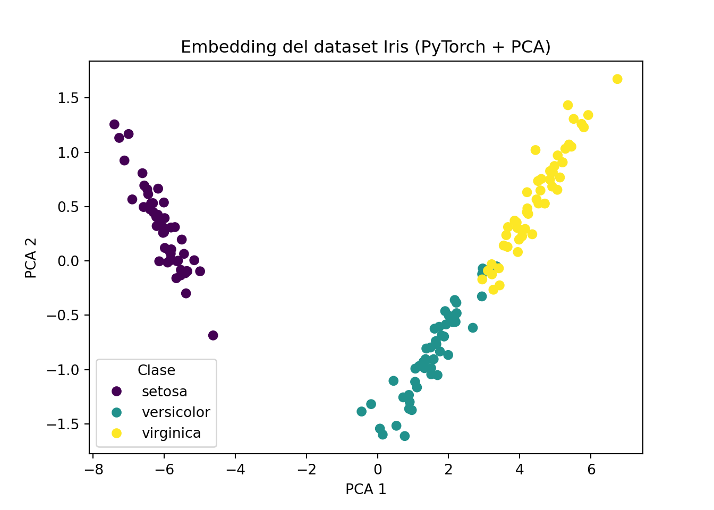
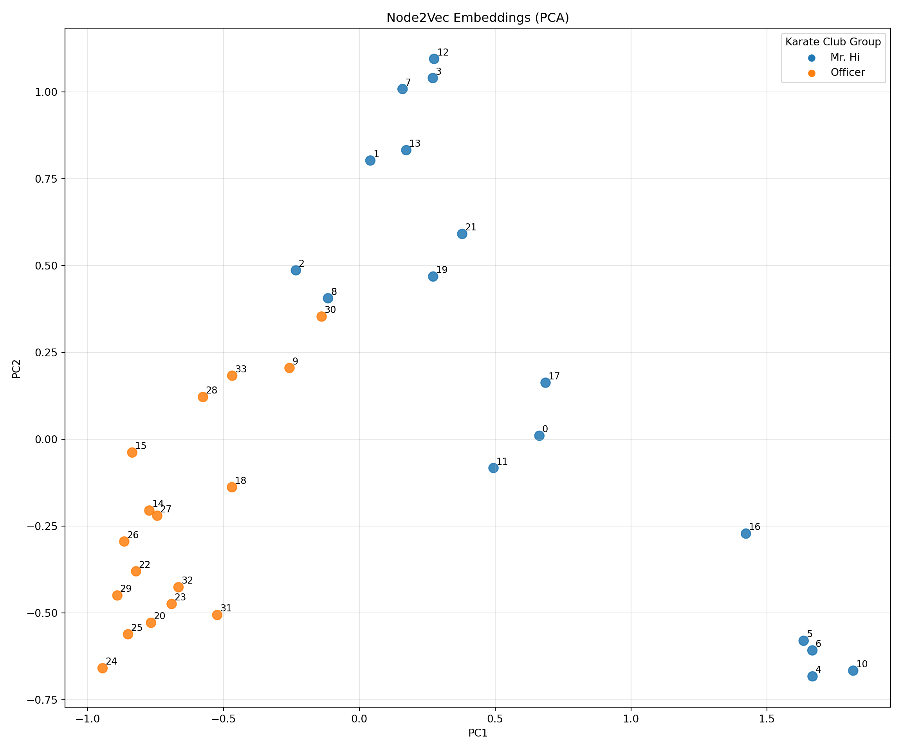
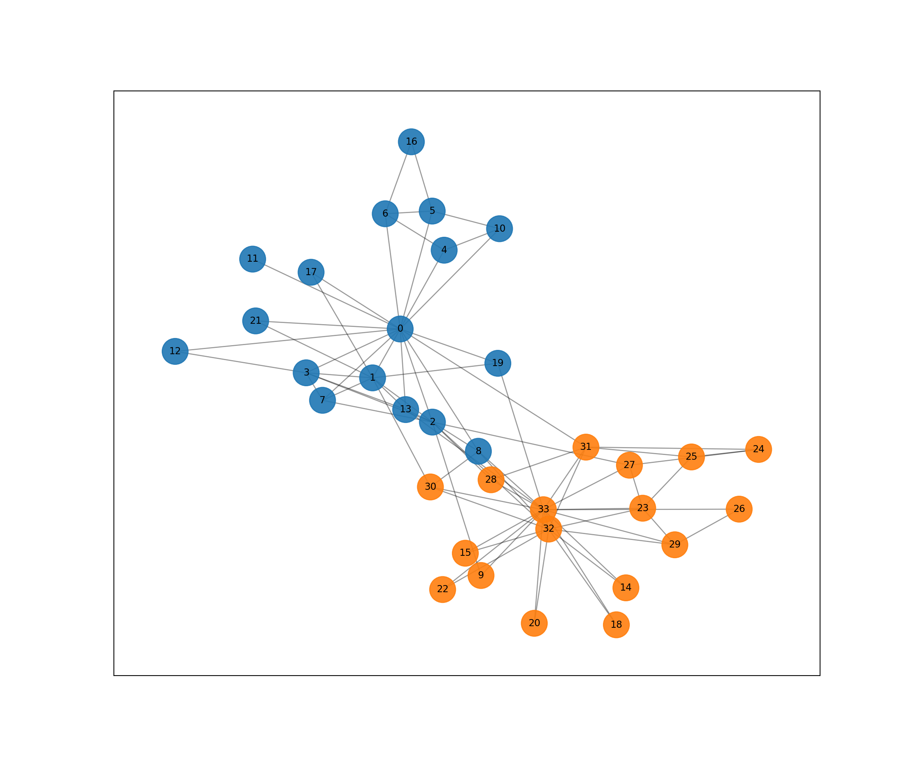
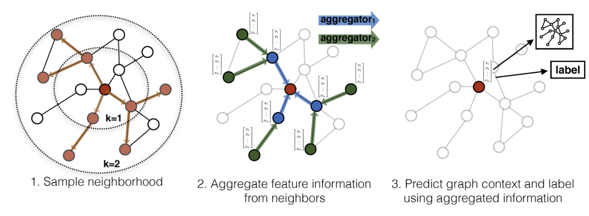
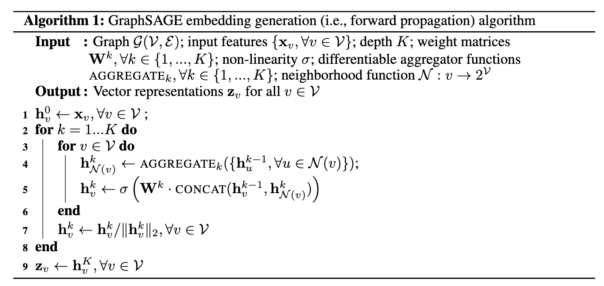
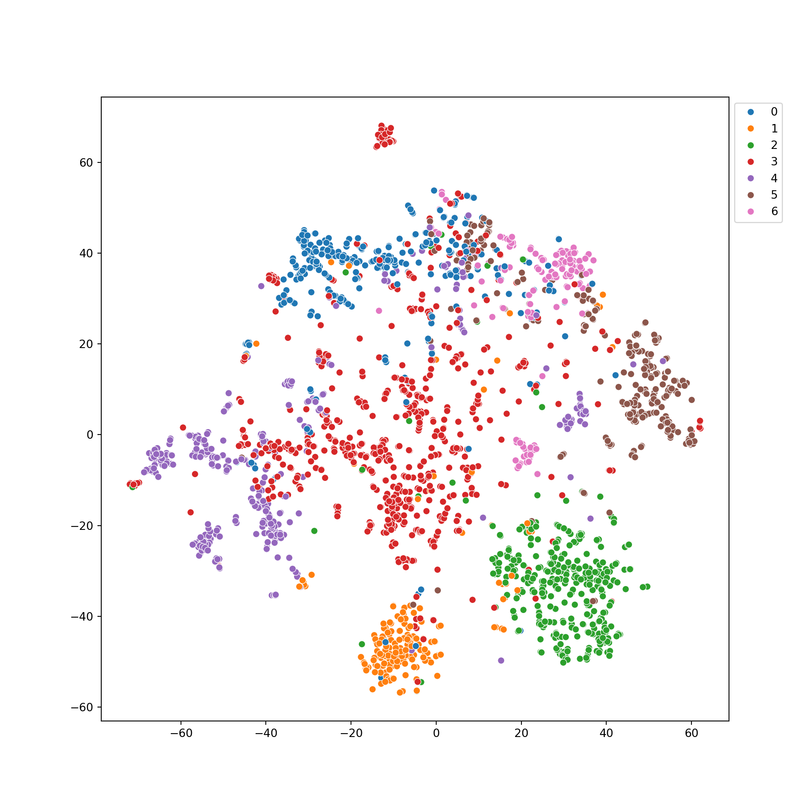

Capítulo 15 Embeddings y Graph Neural Network
15.1 ¿Qué es un embedding?
En el aprendizaje automático tradicional, las categorías (como nombres de ciudades, tipos de átomos o IDs de usuarios) se representaban mediante representaciones numéricas como One-Hot Encoding.
Aunque de utilidad, en la práctica dicha soluciones padecen de algunos problemas: i) incapacidad semántica: en el caso palabras, las representaciones de pareja que tiene un significado cercano, sus encondings se pueden encontrar muy alejados (e.g. El vector de “perro” [1,0,0] y el de “cachorro” [0,1,0] son ortogonales; no tienen ninguna relación); ii) explosión de memoria:al tener muchos elementos, cada vector puede tener un número grande dimensiones, pero que la mayoría sean de ceros (sparse).
Para dar solucion a este tema, se emplean los embeddings, los cuale son representaciones densas de datos discretos. Es decir, para representar los puntos consolidamos una transformacion de los datos hacia un espacio, que en lugar de crear un vector gigante de ceros y unos, representa a cada elemento como un vector de números reales de tamaño fijo (por ejemplo, 128 o 300 dimensiones).
La idea esencial es proyectar los puntos en un espacio continuo de baja dimensión donde la la similitud de los puntos (e.g semantica, geométrica, estructural) se conserve geometricamente. Es decir puntos que son parecidos en el espacio original, tengan una representacion cercana bajo dicha función.
En Deep Learning, los embeddding ajustando los pesos pesos de capaz de unaa red neuronal. La red comienza con vectores aleatorios y a medida que la red intenta resolver una tarea (e.g. predecir la siguiente palabra, image o clasificar un nodo), se ajustan la representación vectorial.
Al final, elementos que aparecen en contextos similares terminan “empujados” hacia la misma zona en el espacio vectorial.
Para ejemplificarlo podemos construir embeddings para los elementos del Dataset Iris.
import torch
from torch import nn
from torch.utils.data import DataLoader, TensorDataset
import matplotlib.pyplot as plt
from sklearn.datasets import load_iris
from sklearn.decomposition import PCA
# Datos
iris = load_iris()
X = torch.tensor(iris.data, dtype=torch.float32)
y = torch.tensor(iris.target, dtype=torch.long)
dataset = TensorDataset(X, y)
loader = DataLoader(dataset, batch_size=32, shuffle=True)
# Modelo
class Classifier(nn.Module):
def __init__(self, input_dim=4, emb_dim=8, num_classes=3):
super().__init__()
self.encoder = nn.Sequential(
nn.Linear(input_dim, emb_dim),
nn.ReLU()
)
self.classifier = nn.Linear(emb_dim, num_classes)
def forward(self, x):
z = self.encoder(x)
return self.classifier(z), z
model = Classifier()
optimizer = torch.optim.Adam(model.parameters(), lr=0.01)
criterion = nn.CrossEntropyLoss()
# Entrenamiento breve
for epoch in range(100):
for xb, yb in loader:
optimizer.zero_grad()
logits, _ = model(xb)
loss = criterion(logits, yb)
loss.backward()
optimizer.step()
if epoch % 10 == 0:
print(f"Epoch {epoch:>3} | Loss: {loss:.5f}")## Epoch 0 | Loss: 0.97061
## Epoch 10 | Loss: 0.51020
## Epoch 20 | Loss: 0.26753
## Epoch 30 | Loss: 0.20009
## Epoch 40 | Loss: 0.11925
## Epoch 50 | Loss: 0.06770
## Epoch 60 | Loss: 0.07769
## Epoch 70 | Loss: 0.13522
## Epoch 80 | Loss: 0.09195
## Epoch 90 | Loss: 0.10649# Obtener embeddings
with torch.no_grad():
embeddings = model.encoder(X).numpy()
print("Embeddings: ")## Embeddings:## array([[1.228936 , 0. , 6.7014956, 0. , 0. , 3.3533223,
## 0. , 2.6186879],
## [1.3932565, 0. , 6.039477 , 0. , 0. , 2.9469004,
## 0. , 2.3108451]], dtype=float32)Ahora usaremos PCA para obtener la representación de dichos puntos:
# PCA a 2 dimensiones
pca = PCA(n_components=2)
emb_2d = pca.fit_transform(embeddings)
# Plot (una sola figura)
plt.figure()## <Figure size 700x500 with 0 Axes>## Text(0.5, 0, 'PCA 1')## Text(0, 0.5, 'PCA 2')## Text(0.5, 1.0, 'Embedding del dataset Iris (PyTorch + PCA)')# Leyenda correcta
handles, _ = scatter.legend_elements()
plt.legend(handles, iris.target_names, title="Clase")## <matplotlib.legend.Legend object at 0x7e62564fddd0> Matematicamente, si tenemos V elementos y queremos vectores de tamaño d, un embedding es una matriz \(E\) que transforma los datos de entrada de la siguiente forma:
\[\begin{equation} E \in \mathbb{R}^{V \times d} \end{equation}\]
En donde * \(E\): Matriz de parámetros aprendibles (Embedding Layer). * \(V\): Tamaño del vocabulario o número total de entidades. * \(d\): Dimensionalidad del espacio latente (hiperparámetro). * \(e_1 \cdot e_2\): Producto punto, que mide la dirección común de los vectores. * \(\|e\|\): Norma euclidiana que normaliza el vector para ignorar su magnitud y enfocarse en la orientación.
Para obtener el vector \(e_i\) de un elemento con índice \(i\), multiplicamos un vector $ \(x_i\) por la matriz:
\[\begin{equation} e_i = x_i^\top E \end{equation}\]
Un forma común de saber qué tan parecidos son dos embeddings es mediante el coseno del ángulo entre ellos:
\[\begin{equation} \text{sim}(e_1, e_2) = \frac{e_1 \cdot e_2}{\|e_1\| \|e_2\|} \end{equation}\]
Los embedding han tenido mucha adopcion en diversas aplicaciones de Deep Learning:
- NLP: Word2Vec, GloVe y los embeddings de Transformers (BERT/GPT) para entender el lenguaje.
- Sistemas de Recomendación: Representar usuarios y productos en el mismo espacio para medir su afinidad.
- Visión por Computador: Face Embeddings para reconocimiento facial (si dos fotos generan vectores cercanos, son la misma persona).
- GNNs: Todos los modelos previos (GCN, GAT, SAGE) generan, en última instancia, Node Embeddings.
15.3 Node2Vec
Antes de que las GNN fueran el estándar, el reto era: ¿Cómo convertimos un nodo de un grafo en un vector de números (embedding) que una red neuronal tradicional pueda entender?

Como hemos mencionado previamente, en el área de procesamiento de lenguaje natural se propuso al modelo word2vec en donde se construye un embedding de palabras usando la idea que las palabras que aparecen en contextos similares deben induceir vectores similares. Node2vec se construye con ideas similares: para obtener nodos en contexto similares se ejecutan caminatas aleatorias sobre la gráfica (random walks), de forma que podemos tratar un grafo como un lenguaje.
Node2vec permite dicho el algoritmo explore el grafo de forma más flexible, capturando tanto comunidades locales como roles estructurales. Dicha exploración se basa en generar “paseos aleatorios” con cierto nivel de sesgo (biased random walk) desde cada nodo y luego alimentar esos paseos a un modelo Skip-gram (el mismo de word2vec).
Las caminatas aleatorias en este enfoque tiene dos hiper-parámetros para explorar la gráfica mediante caminan que obtienen nodos usando trayectorias que usan información de los nodos visitados:
Parámetro de Retorno (\(p\)): Controla la probabilidad de regresar inmediatamente al nodo anterior. Un \(p\) bajo favorece la exploración local (BFS - Breadth-First Search), capturando la similitud estructural (nodos que actúan como “hubs”).
Parámetro de “In-out” (\(q\)): Controla la probabilidad de alejarse hacia nodos no visitados. Un \(q\) bajo favorece la exploración profunda (DFS - Depth-First Search), capturando comunidades o macro-estructuras.
Para calcular la representación \(z_v\) de los nodos \(v\) de la grafíca, se ajusta la función de perdida con elobjetivo es maximizar la probabilidad de co-ocurrencia de nodos en una vecindad:
\[\begin{equation} \mathcal{L} = \sum_{w \in \mathcal{W}} - \log \left(\sigma(\mathbf{z}_v^{\top} \mathbf{z}_w) \right) + \sum_{w \sim \mathcal{V} \setminus \mathcal{W}} - \log \left( 1 - \sigma(\mathbf{z}_v^{\top} \mathbf{z}_w) \right), \end{equation}\]
El factor de la derecha es es el negativa sampling, que induce una penalización en la representación del embedding, es decir, si dos nodos no están relacionados en las vecindades exploradas de las caminatas aleatorias, entonces los queremos alejados.
Cabe destacar que Node2Vec es una representacion de tipo Shallow Embedding, las cuales son representaciones vectoriales de baja dimensión mediante una tabla de búsqueda , de modo que se maximiza la probabilidad de preservar las vecindades;
A su vez, tales representaciones son utiles como entrada para una tarea posterior determinada; por ejemplo, en tareas a nivel de nodo, pueden utilizarse directamente como entrada para un clasificador final. Para tareas a nivel de aristas, las representaciones a nivel de borde se pueden obtener mediante el promedio o el producto de Hadamard.
Sin embargo, cuentan con ciertas limitaciones: i) no incorporan información de las características asociada a nodos y/o aristas, ii) son representaciones transductivas (es decir, no pueden aplicarse elementos no vistos en el entrenamiento, ya que los parámetros aprendibles están fijados a los nodos de un grafo en particular.
15.3.1 Ejemplo: Aplicando el modelo de SkipGrams a Random Walks
En esta sección se presenta código que muestra una version simplificada de los elementos de node2vec para la gráfica Karate Club, en primer término se calculan una secuencia de nodos obtenidos de caminatas aleatorias que posteriormente se emplean para crear un encaje.
Dicho encaje se realiza con la clase Word2Vec de la libreria gensim.
Empleando la siguiente clase se simulan caminatas aleatorias a partir de la estructura de la gráfica.
import random
import numpy as np
import matplotlib.pyplot as plt
import networkx as nx
from sklearn.decomposition import PCA
from gensim.models import KeyedVectors, Word2Vec
class Graph():
def __init__(self, nx_G, is_directed, p, q):
self.G = nx_G
self.is_directed = is_directed
self.p = p
self.q = q
def node2vec_walk(self, walk_length, start_node):
"""
Simulate a random walk starting from start node.
"""
G = self.G
alias_nodes = self.alias_nodes
alias_edges = self.alias_edges
walk = [start_node]
while len(walk) < walk_length:
cur = walk[-1]
cur_nbrs = sorted(G.neighbors(cur))
if len(cur_nbrs) > 0:
if len(walk) == 1:
walk.append(
cur_nbrs[
alias_draw(
alias_nodes[cur][0],
alias_nodes[cur][1]
)
]
)
else:
prev = walk[-2]
next_node = cur_nbrs[
alias_draw(
alias_edges[(prev, cur)][0],
alias_edges[(prev, cur)][1]
)
]
walk.append(next_node)
else:
break
return walk
def simulate_walks(self, num_walks, walk_length):
"""
Repeatedly simulate random walks from each node.
"""
G = self.G
walks = []
nodes = list(G.nodes())
print('Walk iteration:')
for walk_iter in range(num_walks):
print(f'{walk_iter + 1} / {num_walks}')
random.shuffle(nodes)
for node in nodes:
walks.append(
self.node2vec_walk(
walk_length=walk_length,
start_node=node
)
)
return walks
def get_alias_edge(self, src, dst):
"""
Get the alias edge setup lists for a given edge.
"""
G = self.G
p = self.p
q = self.q
unnormalized_probs = []
for dst_nbr in sorted(G.neighbors(dst)):
weight = G[dst][dst_nbr].get('weight', 1.0)
if dst_nbr == src:
unnormalized_probs.append(weight / p)
elif G.has_edge(dst_nbr, src):
unnormalized_probs.append(weight)
else:
unnormalized_probs.append(weight / q)
norm_const = sum(unnormalized_probs)
normalized_probs = [
float(u_prob) / norm_const for u_prob in unnormalized_probs
]
return alias_setup(normalized_probs)
def preprocess_transition_probs(self):
"""
Preprocessing of transition probabilities for guiding the random walks.
"""
G = self.G
is_directed = self.is_directed
alias_nodes = {}
for node in G.nodes():
unnormalized_probs = [
G[node][nbr].get('weight', 1.0)
for nbr in sorted(G.neighbors(node))
]
norm_const = sum(unnormalized_probs)
normalized_probs = [
float(u_prob) / norm_const for u_prob in unnormalized_probs
]
alias_nodes[node] = alias_setup(normalized_probs)
alias_edges = {}
if is_directed:
for edge in G.edges():
alias_edges[edge] = self.get_alias_edge(edge[0], edge[1])
else:
for edge in G.edges():
alias_edges[edge] = self.get_alias_edge(edge[0], edge[1])
alias_edges[(edge[1], edge[0])] = self.get_alias_edge(edge[1], edge[0])
self.alias_nodes = alias_nodes
self.alias_edges = alias_edges
def alias_setup(probs):
"""
Compute utility lists for non-uniform sampling from discrete distributions.
"""
K = len(probs)
q = np.zeros(K)
J = np.zeros(K, dtype=int)
smaller = []
larger = []
for kk, prob in enumerate(probs):
q[kk] = K * prob
if q[kk] < 1.0:
smaller.append(kk)
else:
larger.append(kk)
while smaller and larger:
small = smaller.pop()
large = larger.pop()
J[small] = large
q[large] = q[large] + q[small] - 1.0
if q[large] < 1.0:
smaller.append(large)
else:
larger.append(large)
return J, q
def alias_draw(J, q):
"""
Draw sample from a non-uniform discrete distribution using alias sampling.
"""
K = len(J)
kk = int(np.floor(np.random.rand() * K))
if np.random.rand() < q[kk]:
return kk
else:
return J[kk]La siguiente función se en
def learn_embeddings(
walks,
vector_size: int = 128,
window: int = 10,
workers: int = 8,
epochs: int = 1
):
"""
Learn embeddings by optimizing the Skip-gram objective using SGD.
"""
# gensim requires lists, not iterators
walks = [list(map(str, walk)) for walk in walks]
model = Word2Vec(
sentences=walks,
vector_size=vector_size,
window=window,
min_count=0,
sg=1, # skip-gram
workers=workers,
epochs=epochs
)
# save in word2vec format (node2vec-compatible)
model.wv.save_word2vec_format("embeddings.emb")
return modelEstablecidao lo anterior cargamos los datos que representan a la gráfica del Karate Club:
import networkx as nx
nx_G = nx.karate_club_graph()
G = Graph(nx_G, is_directed=False, p=0.8, q=0.1)
G.preprocess_transition_probs()
walks = G.simulate_walks(num_walks=20, walk_length=10)## Walk iteration:
## 1 / 20
## 2 / 20
## 3 / 20
## 4 / 20
## 5 / 20
## 6 / 20
## 7 / 20
## 8 / 20
## 9 / 20
## 10 / 20
## 11 / 20
## 12 / 20
## 13 / 20
## 14 / 20
## 15 / 20
## 16 / 20
## 17 / 20
## 18 / 20
## 19 / 20
## 20 / 20Ahora podemos revisar como se ven las caminatas:
## [8, 32, 31, 28, 2, 13, 33, 8, 0, 5]A partir de este punto calculamos los encajes de los nodos
Nota: Este encaje solo usa las caminatas, no involucra features numéricas
Ahora mostraremos como se ve el encaje recién generado usado PCA:
def load_embeddings(path="embeddings.emb"):
kv = KeyedVectors.load_word2vec_format(path)
nodes = kv.index_to_key
X = np.array([kv[node] for node in nodes])
return nodes, X
def plot_embeddings_pca(nodes, X, graph):
pca = PCA(n_components=2, random_state=42)
X_2d = pca.fit_transform(X)
club_to_color = {
"Mr. Hi": "tab:blue",
"Officer": "tab:orange"
}
colors = [
club_to_color[graph.nodes[int(node)]["club"]]
for node in nodes
]
plt.figure(figsize=(12, 10))
plt.scatter(X_2d[:, 0], X_2d[:, 1], c=colors, s=80, alpha=0.85)
for i, node in enumerate(nodes):
plt.text(
X_2d[i, 0] + 0.01,
X_2d[i, 1] + 0.01,
node,
fontsize=9
)
for club, color in club_to_color.items():
plt.scatter([], [], c=color, label=club)
plt.legend(title="Karate Club Group")
plt.title("Node2Vec Embeddings (PCA)")
plt.xlabel("PC1")
plt.ylabel("PC2")
plt.grid(alpha=0.3)
plt.tight_layout()
plt.show()
# usage
G = nx.karate_club_graph()
nodes, X = load_embeddings("embeddings.emb")
plot_embeddings_pca(nodes, X, G)
A modo de comparativa, presentamos el gráfico del Karate Club. Se aprecia la cercania de los nodos y el encaje de arriba.
import networkx as nx
import matplotlib.pyplot as plt
# graph
G = nx.karate_club_graph()
# color by club
club_to_color = {
"Mr. Hi": "tab:blue",
"Officer": "tab:orange"
}
node_colors = [
club_to_color[G.nodes[n]["club"]]
for n in G.nodes()
]
# layout
pos = nx.spring_layout(G, seed=42)
# plot
plt.figure(figsize=(12, 10))## <Figure size 1200x1000 with 0 Axes>## <matplotlib.collections.PathCollection object at 0x7e625695db10>## <matplotlib.collections.LineCollection object at 0x7e6265d6fc10>## {0: Text(-0.1637610156025021, 0.32964542107317624, '0'), 1: Text(-0.22110656624798736, 0.15465314513942682, '1'), 2: Text(-0.09674034041415447, -0.0037573560658175995, '2'), 3: Text(-0.3591582159625228, 0.1728032018032186, '3'), 4: Text(-0.07229970678169054, 0.6118299837698934, '4'), 5: Text(-0.09717721706357874, 0.751932396613453, '5'), 6: Text(-0.1947784244080323, 0.7423079030021026, '6'), 7: Text(-0.3251725240524693, 0.0742949529007427, '7'), 8: Text(-0.0011697920357091234, -0.10817287772994941, '8'), 9: Text(0.004290475810724824, -0.5530221298693542, '9'), 10: Text(0.042837332459480335, 0.6887719750394118, '10'), 11: Text(-0.47044853515423185, 0.5798729526476855, '11'), 12: Text(-0.6315773706598862, 0.24946302282839056, '12'), 13: Text(-0.15233910119383867, 0.041140927956493364, '13'), 14: Text(0.30552515064095687, -0.5971952387445756, '14'), 15: Text(-0.028298909250223627, -0.4732965857414292, '15'), 16: Text(-0.14049188351342506, 1.0, '16'), 17: Text(-0.34898558904265237, 0.5328400662671233, '17'), 18: Text(0.2857217216627078, -0.729561070874141, '18'), 19: Text(0.03928628689562421, 0.20684603040975344, '19'), 20: Text(0.11506086536418461, -0.7241738778220087, '20'), 21: Text(-0.46423812660329555, 0.35865653156837984, '21'), 22: Text(-0.07550970574233766, -0.6032909516752911, '22'), 23: Text(0.34042142719841684, -0.3121094950798013, '23'), 24: Text(0.581428589750548, -0.10159916409318481, '24'), 25: Text(0.44187123403994266, -0.12852017387518871, '25'), 26: Text(0.5410026608885361, -0.31543446975966133, '26'), 27: Text(0.31286553761978536, -0.1580322192793705, '27'), 28: Text(0.025224740721732208, -0.21020612426204355, '28'), 29: Text(0.40722416495399316, -0.4430701164729471, '29'), 30: Text(-0.10091807492123406, -0.23595984038361023, '30'), 31: Text(0.22244687101605135, -0.09337813605721001, '31'), 32: Text(0.14500092919216684, -0.3868283900546997, '32'), 33: Text(0.1339631104349227, -0.3174502931789706, '33')}
15.4 SageConv
La mayoría de los modelos anteriores (como GCN o node2vec) asumen que el gráfica es estático y que todos los nodos están presentes durante el entrenamiento. Esto se conoce como aprendizaje transductivo.
Sin embargo, en aplicaciones prácticas, como en redes de sociales, la gráfica cambia dinámicamente en periodos muy cortos. Por ejemplo, al añadir un usuario nuevo, los modelos transductivos no podrían llevar a cabo predicciones; tendríamos que reentrenar todo el modelo desde cero para generar un embedding para ese nuevo nodo.
Este es un problema que es atacado por el modelo GraphSAGE (SAGE viene de SAmple and aggreGatE) el cual tiene un diseñado inductivo, en cual tiene un mecanismo de agregación de información que le permite generar representaciones para nodos que nunca vio durante el entrenamiento.
Este modelo fue introducido en 2018 por un (equipo de Standford)[https://arxiv.org/pdf/1706.02216]. A diferencia de las GCN que utilizan la matriz de adyacencia completa, tal opera mediante un proceso de muestreo de vecindad.

Los pasos del modelo se resumen a continuación:
A) Sampling: En un primer paso, para cada nodo se genera una caminata aleatoria de nodos, con una longitud pre-fijada.
B) Aggregation: Dichas caminatas, sirven para “resumir” la información de nodos que co-ocurren en la estructura de vecindades que exploraron en la gráfica. Dicha información se resumen mediante funciones de agregregacion \(AGGREGATE_k\), como se presenta a continuación:
\[\begin{equation} h_{\mathcal{N}(i)}^{(k)} = \text{AGGREGATE}_k \left( \{ h_j^{(k-1)}, \forall j \in \mathcal{N}(i) \} \right) \end{equation}\]
En tal expresión, los términos involucrados se refieren a:
- \(h_{\mathcal{N}(i)}^{(k)}\): Representación agregada de los vecinos del nodo \(i\) en la capa \(k\), *\(\text{AGGREGATE}_k\): Función de agregación de información de los nodos,
- \(\text{concat}(\cdot, \cdot)\): Operación de concatenación que preserva la identidad del nodo central diferenciándola de su contexto,
- \(\mathbf{W}^{(k)}\): Matriz de pesos aprendible de la capa \(k\),
- \(\sigma\): Función de activación no lineal.
Cabe destacar que en el artículo original se exploran las siguientes opciones de agregación:
Mean aggregator: Promedio de los vectores,
LSTM aggregator: Estimación con una red LSTM,
Pooling aggregator: Aplica una red densa seguida de un operador de máximo (\(Max( \cdot, 0)\)).
C) Combinación y actualización: Posteriormente, se concatena la información agregada con la representación actual del nodo y se proyecta:
\[\begin{equation} h_i^{(k)} = \sigma \left( \mathbf{W}^{(k)} \cdot \text{concat}(h_i^{(k-1)}, h_{\mathcal{N}(i)}^{(k)}) \right) \end{equation}\]
Es dable mencionar que, este modelo al incorporarse un nuevo nodo, las nuevas estimaciones se hacen considerendo la agregación de información de los nodos vecinos. Es decir, elimina la dependencia de las predicciones usando la gráfica completa, por estrategia de agregación de los nodos en una vecindad, donde el proceso de cómo viaja la información queda representado por las funciones de agregación y el concatenado de la misma.
Para mejor referencia, se presenta la descripción original del algoritmo en el paper original

15.4.1 Ejemplo: Clasificación de artículos de investigación por categoría (Parte II)
La arquitecura del ejemplo es la siguiente, donde usaremos un encaje denso usando una Graph Convolution Network:

Leemos la data de
from sklearn.metrics import roc_auc_score
import torch
import torch.nn.functional as F
from torch import nn
import torch_geometric.transforms as T
from torch_geometric.datasets import Planetoid
from torch_geometric.nn import GCNConv
from torch_geometric.utils import negative_sampling
from sklearn.metrics import roc_auc_score
device = torch.device('cpu')
transform = T.Compose([
T.NormalizeFeatures(),
T.ToDevice(device),
T.RandomLinkSplit(
num_val=0.05,
num_test=0.1,
is_undirected=True,
add_negative_train_samples=False),
])
dataset = Planetoid('./data/', name='Cora', transform=transform)
# After applying the `RandomLinkSplit` transform, the data is transformed from
# a data object to a list of tuples (train_data, val_data, test_data), with
# each element representing the corresponding split.
train_data, val_data, test_data = dataset[0]Este es el modelo que emplearemos:
class GCNLinkPredictor(nn.Module):
def __init__(self, dim_in, dim_h, dim_z):
super().__init__()
torch.manual_seed(1234567)
self.conv1 = GCNConv(dim_in, dim_h)
self.conv2 = GCNConv(dim_h, dim_z)
self.criterion = nn.BCEWithLogitsLoss()
# -------------------------------------------------
# Encoder
# -------------------------------------------------
def encode(self, x, edge_index):
h = self.conv1(x, edge_index)
h = F.relu(h)
h = self.conv2(h, edge_index)
return h
# -------------------------------------------------
# Decoder (dot product)
# -------------------------------------------------
def decode(self, z, edge_index):
return (z[edge_index[0]] * z[edge_index[1]]).sum(dim=-1)
def decode_all(self, z):
adj = z @ z.t()
return (adj > 0).nonzero(as_tuple=False).t()
# -------------------------------------------------
# Training
# -------------------------------------------------
def fit(self, train_data, val_data, test_data, epochs, lr=0.01):
optimizer = torch.optim.Adam(self.parameters(), lr=lr)
best_val_auc = 0.0
best_test_auc = 0.0
for epoch in range(1, epochs + 1):
loss = self._train_epoch(train_data, optimizer)
val_auc = self.validate(val_data)
test_auc = self.test(test_data)
if val_auc > best_val_auc:
best_val_auc = val_auc
best_test_auc = test_auc
if epoch % 20 == 0:
print(
f"Epoch {epoch:03d} | "
f"Loss: {loss:.4f} | "
f"Val AUC: {val_auc:.4f} | "
f"Test AUC: {test_auc:.4f}"
)
print(f"Final Test AUC: {best_test_auc:.4f}")
def _train_epoch(self, data, optimizer):
self.train()
optimizer.zero_grad()
z = self.encode(data.x, data.edge_index)
neg_edge_index = negative_sampling(
edge_index=data.edge_index,
num_nodes=data.num_nodes,
num_neg_samples=data.edge_label_index.size(1),
method="sparse"
)
edge_index = torch.cat(
[data.edge_label_index, neg_edge_index],
dim=-1
)
edge_label = torch.cat(
[
data.edge_label,
data.edge_label.new_zeros(neg_edge_index.size(1))
],
dim=0
)
logits = self.decode(z, edge_index).view(-1)
loss = self.criterion(logits, edge_label)
loss.backward()
optimizer.step()
return loss.item()
# -------------------------------------------------
# Evaluation
# -------------------------------------------------
@torch.no_grad()
def validate(self, data):
return self._eval_auc(data)
@torch.no_grad()
def test(self, data):
return self._eval_auc(data)
@torch.no_grad()
def _eval_auc(self, data):
self.eval()
z = self.encode(data.x, data.edge_index)
logits = self.decode(z, data.edge_label_index).view(-1)
probs = logits.sigmoid()
return roc_auc_score(
data.edge_label.cpu().numpy(),
probs.cpu().numpy()
)Entrenaremos el modelo:
model = GCNLinkPredictor(
dim_in=dataset.num_features,
dim_h=128,
dim_z=64
).to(device)
model.fit(
train_data=train_data,
val_data=val_data,
test_data=test_data,
epochs=100,
lr=0.01
)## Epoch 020 | Loss: 0.6507 | Val AUC: 0.6223 | Test AUC: 0.6759
## Epoch 040 | Loss: 0.5127 | Val AUC: 0.8213 | Test AUC: 0.8200
## Epoch 060 | Loss: 0.4715 | Val AUC: 0.8632 | Test AUC: 0.8667
## Epoch 080 | Loss: 0.4565 | Val AUC: 0.8731 | Test AUC: 0.8870
## Epoch 100 | Loss: 0.4440 | Val AUC: 0.8817 | Test AUC: 0.8963
## Final Test AUC: 0.8963z = model.encode(test_data.x, test_data.edge_index)
final_edge_index = model.decode_all(z)
print("z")## z## tensor([[-0.2263, -0.3726, -0.1493, ..., -0.2022, -0.0197, -0.1625],
## [ 0.0563, 0.2069, -0.0334, ..., 0.0959, 0.1410, 0.2703],
## [-0.0349, 0.1045, -0.0776, ..., 0.0055, 0.2627, 0.0729],
## ...,
## [ 0.0200, -0.0608, -0.0205, ..., -0.0028, 0.0893, -0.1904],
## [-0.0408, -0.0046, 0.0254, ..., -0.0756, 0.3298, -0.1488],
## [-0.0293, -0.0088, 0.0251, ..., -0.0520, 0.2167, -0.1242]],
## grad_fn=<AddBackward0>)## final_edge_index## tensor([[ 0, 0, 0, ..., 2707, 2707, 2707],
## [ 0, 2, 4, ..., 2705, 2706, 2707]])15.4.2 Ejemplo: Clasificación de artículos de investigación por categoría (Parte II)
A continuación mostramos una arquitectura que permite hace la predicción de aristas usando GraphSage:
import torch
import torch.nn as nn
import torch.nn.functional as F
from torch_cluster import random_walk
from sklearn.linear_model import LogisticRegression
import torch_geometric.transforms as T
from torch_geometric.nn import SAGEConv
from torch_geometric.datasets import Planetoid
from torch_geometric.data import NeighborSampler as RawNeighborSampler
import matplotlib.pyplot as plt
import seaborn as snsdataset = 'Cora'
path = './data'
dataset = Planetoid(path, dataset, transform=T.NormalizeFeatures())
data = dataset[0]class NeighborSampler(RawNeighborSampler):
def sample(self, batch):
batch = torch.tensor(batch)
row, col, _ = self.adj_t.coo()
# For each node in `batch`, we sample a direct neighbor (as positive
# example) and a random node (as negative example):
pos_batch = random_walk(row, col, batch, walk_length=1,
coalesced=False)[:, 1]
neg_batch = torch.randint(0, self.adj_t.size(1), (batch.numel(), ),
dtype=torch.long)
batch = torch.cat([batch, pos_batch, neg_batch], dim=0)
return super(NeighborSampler, self).sample(batch)
train_loader = NeighborSampler(data.edge_index, sizes=[10, 10], batch_size=256,
shuffle=True, num_nodes=data.num_nodes)
class SAGE(nn.Module):
def __init__(self, in_channels, hidden_channels, num_layers):
super(SAGE, self).__init__()
self.num_layers = num_layers
self.convs = nn.ModuleList()
for i in range(num_layers):
in_channels = in_channels if i == 0 else hidden_channels
self.convs.append(SAGEConv(in_channels, hidden_channels))
def forward(self, x, adjs):
for i, (edge_index, _, size) in enumerate(adjs):
x_target = x[:size[1]] # Target nodes are always placed first.
x = self.convs[i]((x, x_target), edge_index)
if i != self.num_layers - 1:
x = x.relu()
x = F.dropout(x, p=0.5, training=self.training)
return x
def full_forward(self, x, edge_index):
for i, conv in enumerate(self.convs):
x = conv(x, edge_index)
if i != self.num_layers - 1:
x = x.relu()
x = F.dropout(x, p=0.5, training=self.training)
return x
device = torch.device('cuda' if torch.cuda.is_available() else 'cpu')
model = SAGE(data.num_node_features, hidden_channels=64, num_layers=2)
model = model.to(device)
optimizer = torch.optim.Adam(model.parameters(), lr=0.01)
x, edge_index = data.x.to(device), data.edge_index.to(device)
def train():
model.train()
total_loss = 0
for batch_size, n_id, adjs in train_loader:
# `adjs` holds a list of `(edge_index, e_id, size)` tuples.
adjs = [adj.to(device) for adj in adjs]
optimizer.zero_grad()
out = model(x[n_id], adjs)
out, pos_out, neg_out = out.split(out.size(0) // 3, dim=0)
pos_loss = F.logsigmoid((out * pos_out).sum(-1)).mean()
neg_loss = F.logsigmoid(-(out * neg_out).sum(-1)).mean()
loss = -pos_loss - neg_loss
loss.backward()
optimizer.step()
total_loss += float(loss) * out.size(0)
return total_loss / data.num_nodes
@torch.no_grad()
def test():
model.eval()
out = model.full_forward(x, edge_index).cpu()
clf = LogisticRegression()
clf.fit(out[data.train_mask], data.y[data.train_mask])
val_acc = clf.score(out[data.val_mask], data.y[data.val_mask])
test_acc = clf.score(out[data.test_mask], data.y[data.test_mask])
return val_acc, test_acc
for epoch in range(1, 51):
loss = train()
val_acc, test_acc = test()
print(f'Epoch: {epoch:03d}, Loss: {loss:.4f}, '
f'Val: {val_acc:.4f}, Test: {test_acc:.4f}')## Epoch: 001, Loss: 1.3853, Val: 0.3420, Test: 0.3540
## Epoch: 002, Loss: 1.3016, Val: 0.5320, Test: 0.5530
## Epoch: 003, Loss: 1.1676, Val: 0.5800, Test: 0.5980
## Epoch: 004, Loss: 1.1151, Val: 0.6220, Test: 0.6590
## Epoch: 005, Loss: 1.0753, Val: 0.6620, Test: 0.7030
## Epoch: 006, Loss: 1.0390, Val: 0.6920, Test: 0.7310
## Epoch: 007, Loss: 1.0165, Val: 0.7120, Test: 0.7380
## Epoch: 008, Loss: 0.9868, Val: 0.7180, Test: 0.7430
## Epoch: 009, Loss: 1.0019, Val: 0.7280, Test: 0.7430
## Epoch: 010, Loss: 0.9861, Val: 0.7160, Test: 0.7470
## Epoch: 011, Loss: 0.9904, Val: 0.7100, Test: 0.7450
## Epoch: 012, Loss: 0.9626, Val: 0.7160, Test: 0.7420
## Epoch: 013, Loss: 0.9634, Val: 0.7300, Test: 0.7410
## Epoch: 014, Loss: 0.9637, Val: 0.7300, Test: 0.7510
## Epoch: 015, Loss: 0.9657, Val: 0.7300, Test: 0.7650
## Epoch: 016, Loss: 0.9591, Val: 0.7380, Test: 0.7620
## Epoch: 017, Loss: 0.9565, Val: 0.7380, Test: 0.7670
## Epoch: 018, Loss: 0.9555, Val: 0.7500, Test: 0.7670
## Epoch: 019, Loss: 0.9236, Val: 0.7440, Test: 0.7660
## Epoch: 020, Loss: 0.9410, Val: 0.7420, Test: 0.7630
## Epoch: 021, Loss: 0.9429, Val: 0.7400, Test: 0.7620
## Epoch: 022, Loss: 0.9462, Val: 0.7460, Test: 0.7630
## Epoch: 023, Loss: 0.9241, Val: 0.7560, Test: 0.7660
## Epoch: 024, Loss: 0.9223, Val: 0.7520, Test: 0.7720
## Epoch: 025, Loss: 0.9196, Val: 0.7560, Test: 0.7690
## Epoch: 026, Loss: 0.9316, Val: 0.7480, Test: 0.7780
## Epoch: 027, Loss: 0.9113, Val: 0.7420, Test: 0.7790
## Epoch: 028, Loss: 0.9310, Val: 0.7540, Test: 0.7810
## Epoch: 029, Loss: 0.9184, Val: 0.7360, Test: 0.7700
## Epoch: 030, Loss: 0.9277, Val: 0.7340, Test: 0.7820
## Epoch: 031, Loss: 0.9187, Val: 0.7340, Test: 0.7830
## Epoch: 032, Loss: 0.9287, Val: 0.7300, Test: 0.7690
## Epoch: 033, Loss: 0.9155, Val: 0.7300, Test: 0.7630
## Epoch: 034, Loss: 0.9084, Val: 0.7300, Test: 0.7590
## Epoch: 035, Loss: 0.9044, Val: 0.7100, Test: 0.7510
## Epoch: 036, Loss: 0.9055, Val: 0.7220, Test: 0.7510
## Epoch: 037, Loss: 0.9109, Val: 0.7340, Test: 0.7550
## Epoch: 038, Loss: 0.9099, Val: 0.7400, Test: 0.7590
## Epoch: 039, Loss: 0.9214, Val: 0.7240, Test: 0.7490
## Epoch: 040, Loss: 0.8916, Val: 0.7340, Test: 0.7420
## Epoch: 041, Loss: 0.9080, Val: 0.7420, Test: 0.7450
## Epoch: 042, Loss: 0.8967, Val: 0.7460, Test: 0.7400
## Epoch: 043, Loss: 0.9053, Val: 0.7380, Test: 0.7430
## Epoch: 044, Loss: 0.8875, Val: 0.7360, Test: 0.7520
## Epoch: 045, Loss: 0.8979, Val: 0.7320, Test: 0.7420
## Epoch: 046, Loss: 0.8894, Val: 0.7240, Test: 0.7330
## Epoch: 047, Loss: 0.8795, Val: 0.7300, Test: 0.7350
## Epoch: 048, Loss: 0.8872, Val: 0.7200, Test: 0.7340
## Epoch: 049, Loss: 0.9017, Val: 0.7120, Test: 0.7290
## Epoch: 050, Loss: 0.8939, Val: 0.7160, Test: 0.7330De lo anterior, podemos representar el embedding de los nodos mediante T-SNE:
from sklearn.manifold import TSNE
with torch.no_grad():
model.eval()
out = model.full_forward(x, edge_index).cpu()## SAGE(
## (convs): ModuleList(
## (0): SAGEConv(1433, 64, aggr=mean)
## (1): SAGEConv(64, 64, aggr=mean)
## )
## )palette = {}
for n, y in enumerate(set(data.y.numpy())):
palette[y] = f'C{n}'
embd = TSNE(
n_components=2,
perplexity=30,
learning_rate='auto',
init='pca',
random_state=42
).fit_transform(out.numpy())
plt.figure(figsize=(10, 10))## <Figure size 1000x1000 with 0 Axes>## <Axes: >## <matplotlib.legend.Legend object at 0x7e6292e365d0> Comparemoslo contra una visualización de las caracteristicas numéricas usando T-SNE donde se aprecia más dispersion:
embd_x = TSNE(
n_components=2,
perplexity=30,
learning_rate='auto',
init='pca',
random_state=42
).fit_transform(data.x.numpy())
plt.figure(figsize=(10, 10))## <Figure size 1000x1000 with 0 Axes>## <Axes: >## <matplotlib.legend.Legend object at 0x7e6292d18d50>